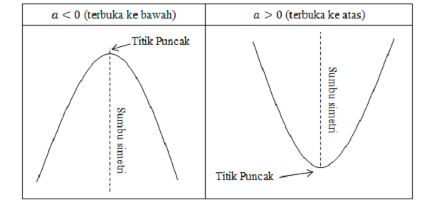

Fungsi Kuadrat
Fungsi kuadrat adalah fungsi polinomial yang memiliki variabel dengan pangkat tertinggi dua. Fungsi kuadrat disusun oleh persamaan kuadrat berbentuk umum f(x) = ax2 + bx + c, dengan a ≠ 0.
Ciri-ciri dari fungsi kuadrat :
Rumus Fungsi Kuadrat
f(x)=ax2+bx+c
Grafik Fungsi Kuadrat
grafik fungsi kuadrat ialah suatu grafik yang berguna untuk menguraikan gambaran dari fungsi kuadrat.
Ciri-ciri grafik fungsi kuadrat :
Ada beberapa sifat grafik fungsi kuadrat yaitu sebagai berikut :
1. Grafik Terbuka
Sifat yang satu ini grafiknya ditentukan oleh nilai f yang berfungsi untuk menentukan hasil ke arah bawah ataupun ke arah atas. Apabila a>0, maka grafiknya akan menampakkan atas.
Sementara itu, apabila nilai a < 0, maka hasil grafiknya negatif atau ke bawah.
2. Titik Puncak
Sifat ini dapat kamu lihat ketika grafik memperlihatkan hasil ke bawah. Jadi, titik puncaknya berada pada titik maksimum. Kemudian, apabila grafik mengarah ke atas serta terbuka, maka minimum adalah titik puncaknya.
Implementasi Rumus dan Grafik Fungsi Kuadrat
Grafik di bawah akan berubah mengikuti nilai koefisien yang ada pada rumus :
f(x)=ax2+bx+c
Ubahlah koefisien a, b, dan c, maka grafik akan membentuk sesuai dengan fungsi tersebut